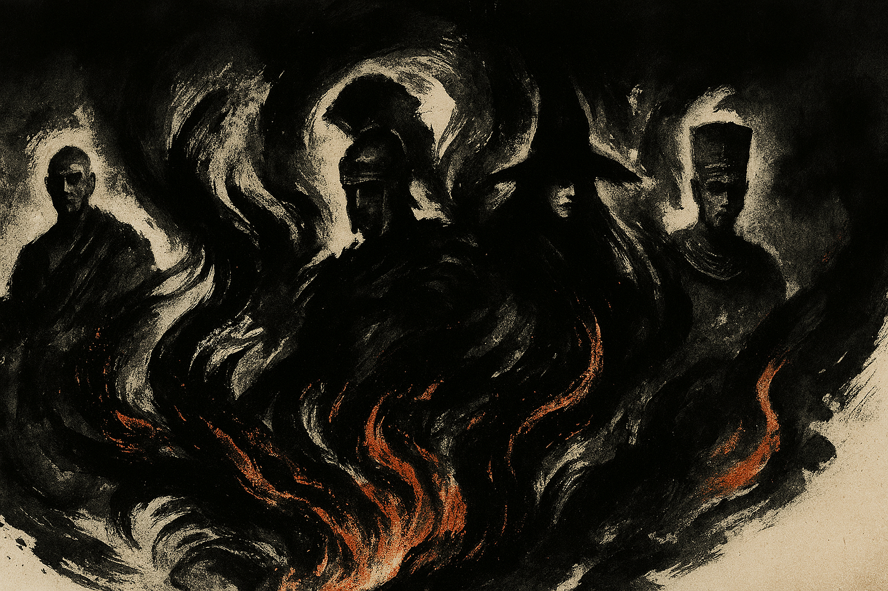

Echoes of Xuan

Eine Geschichte über Wissen, Disziplin und die dunkle Energie,
die weder gut noch böse ist – sondern nur wartet, genutzt zu werden.
„Wissen ohne Kraft ist wie ein Schwert ohne Schneide.“
Li Weis Traum – eine Vision aus der Unterwelt